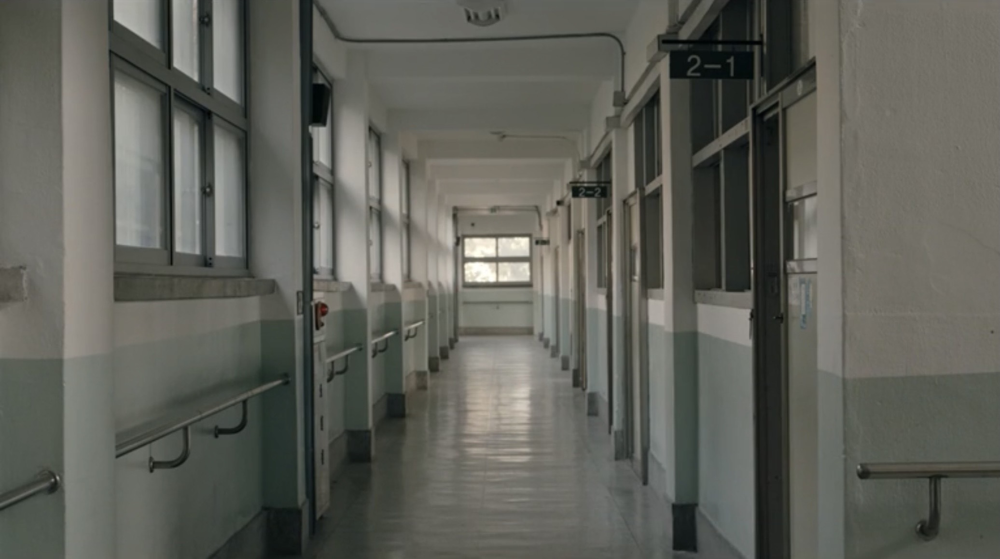
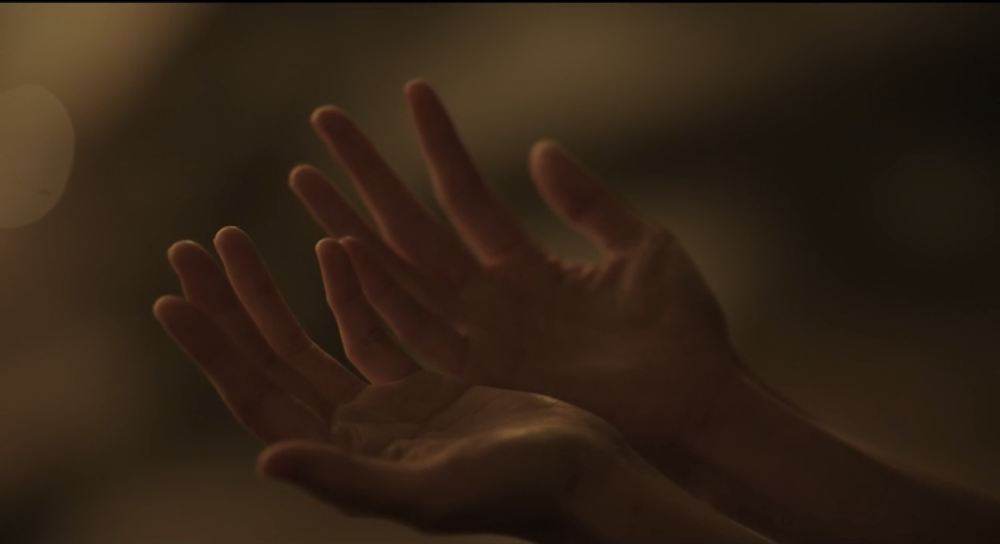
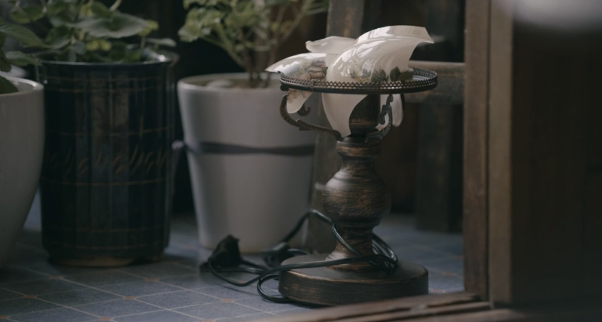
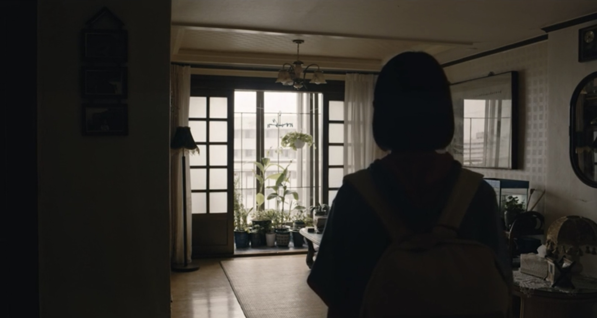
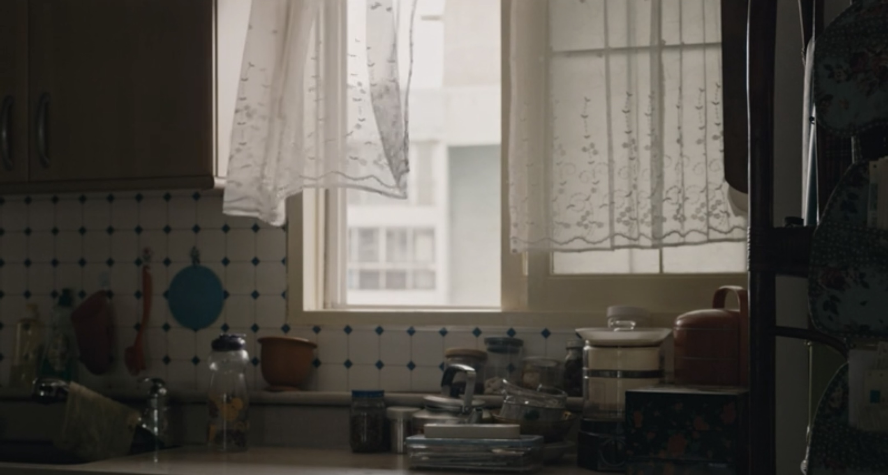
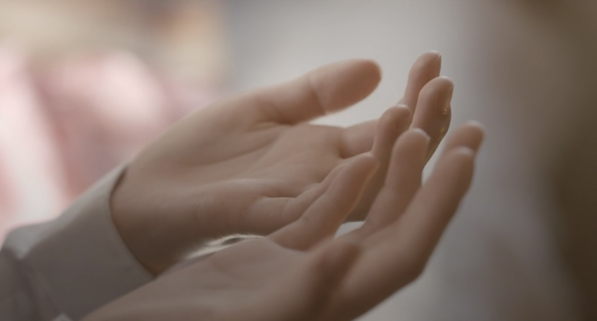

真好。
很久没有看到这样好的亚洲电影。上一个大概是北野武的花火？不断暂停，看静止的动态，生怕下一秒就丢了。观影的时候，女性导演的细腻，亚洲电影的不能言语的深情，在心里不断冲击着我。那一种不需要台词，配乐，的自然的与作品本身的距离，夹杂着熟悉又陌生的生活味道。这一切缠绕又解开，解开又缠绕的情绪,被我尽情吸收，只剩下远不及情感真实的形容词。温柔，残酷。现实，幻想。家庭，社会。笑起来弯弯的眼角，流泪时下沉的眼窝。
少女的房子，是青涩与成熟的，装纳着呐喊与沉默。烂漫的年纪，小小的身躯被动容许大人的世界的附体，容许嘴角不上扬，容许不说话。好像世界在她耳旁细语，获得本身是一种失去，存在本身是在迎接消逝，伤痛与伤痛之前存有快乐，丑恶被照亮是因为有美。
蜂鸟小小的身躯，拖拽着冷冻神经的现实，一刻不停歇的扇动翅膀，也许就能保全自己的一部分而不被磨去印记。蜂鸟的家是不语，是破掉的耳膜，是很酸很咸很苦很无味，但还是会咽下的饭菜。这里的忧伤是静的，忧伤不在的地方是动的，于是生活成了安静的小船在流动的小河，细水潺潺。





